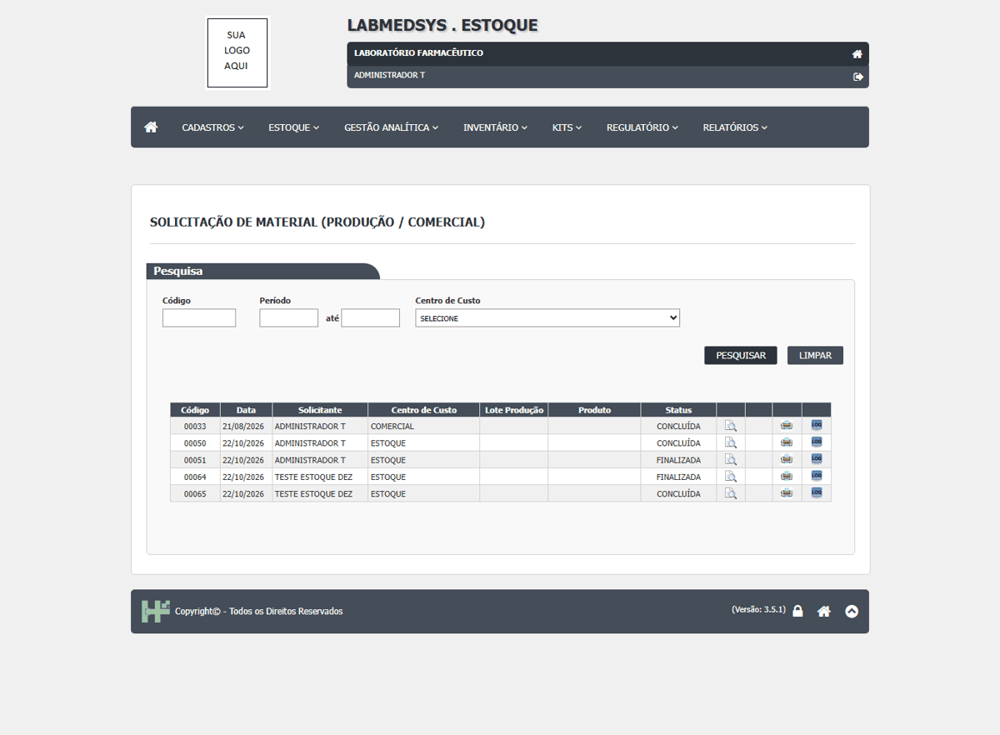
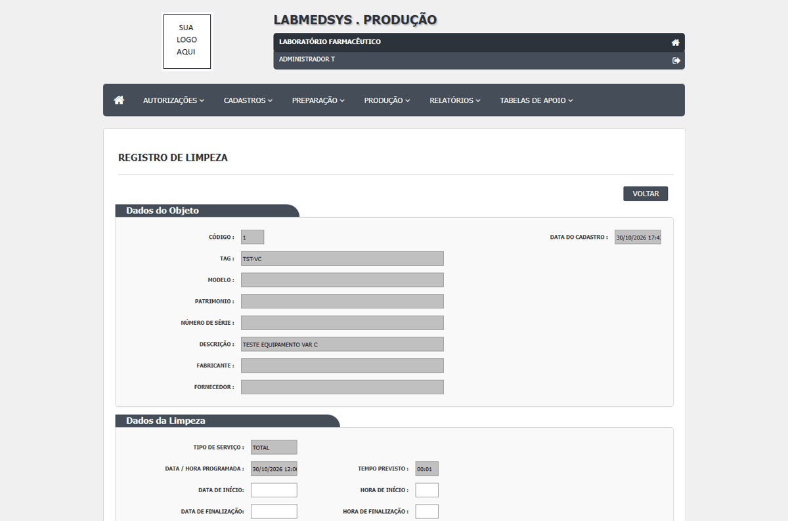
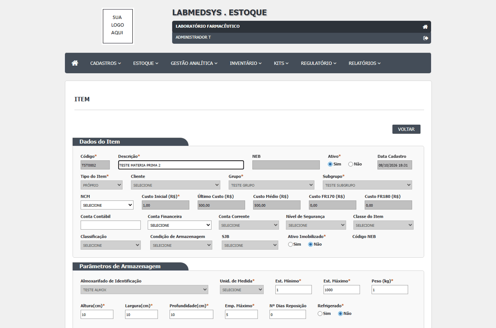
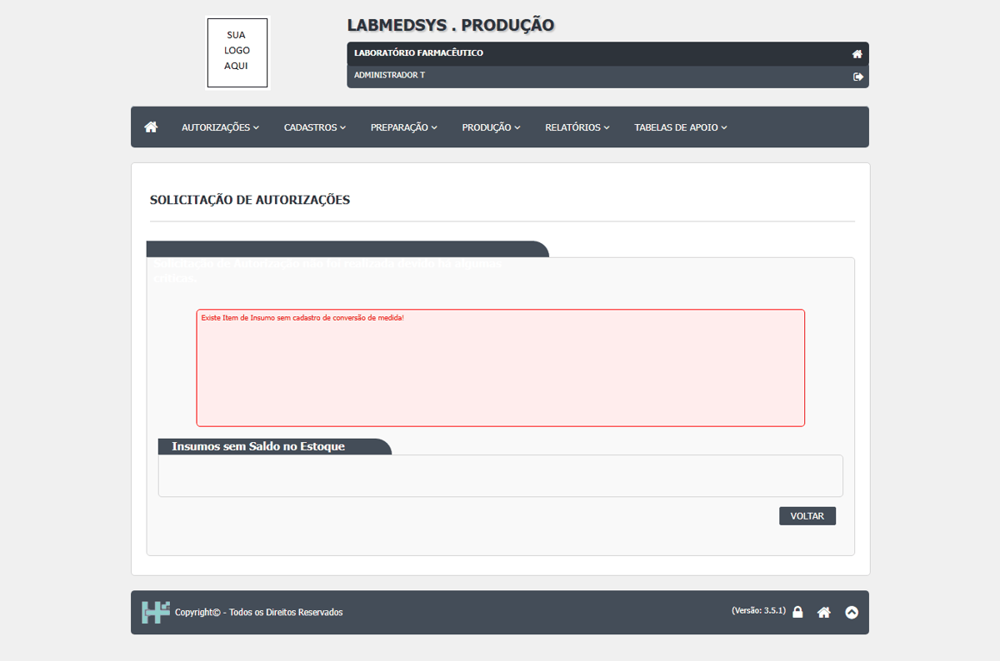

| Defeito | Gravidade | Situação | Título | Tela citada no defeito |
|---|---|---|---|---|
| DV-PRO-010 | Alta | Aberto | Solicitação da cadeia de Produção não localizada no Estoque | SOLICITAÇÃO DE MATERIAL (PRODUÇÃO / COMERCIAL) |
| DV-PRO-004 | Média | Aberto | Links de Profissional e Conta usuário apontam para instalação fora do ambiente | Principal > Cadastros |
| DV-PRO-007 | Média | Aberto | Item de estoque da massa sem unidade impede conversao | Item / Conversao de Unidade |
| DV-PRO-008 | Média | Descartado | Variáveis obrigatórias ausentes na sessão de execução | Preparação do acesso, antes do navegador |
| DV-PRO-009 | Média | Não reproduzido em reteste | Ambiente de teste inacessível antes do login na rodada 10 | Acesso inicial ao ambiente, antes do login |
Cada defeito, com o passo a passo e as capturas
DV-PRO-010 · Solicitação da cadeia de Produção não localizada no Estoque
Com o acesso recuperado, a consulta sem filtros e sua repetição não localizaram a solicitação da cadeia Solicitação de Autorizações 1 / Ordem 6.
Como reproduzir o erro, passo a passo
- Autenticar no Principal e abrir Estoque.
- Abrir Solicitação de Material (Produção), pesquisar sem código, período ou centro de custo e aguardar o postback.
- Repetir a pesquisa uma vez e conferir produto, lote, data e situação.
Esperado
Localizar a solicitação vinculada à cadeia para separar/atender TESTER901.
Obtido
Ambas as consultas retornaram 00033 (21/08/2026, CONCLUÍDA), 00050 (22/10/2026, CONCLUÍDA), 00051 (22/10/2026, FINALIZADA), 00064 (22/10/2026, FINALIZADA) e 00065 (22/10/2026, CONCLUÍDA). Produto e Lote Produção vazios em todas. Nenhum erro de aplicação exibido.
Evidência (captura da tela)


DV-PRO-004 · Links de Profissional e Conta usuário apontam para instalação fora do ambiente
Os links originais de Profissional e Conta usuário apontam para instalação fora do ambiente autorizado; os caminhos relativos autorizados abriram as telas.
Como reproduzir o erro, passo a passo
- Abrir Principal > Cadastros.
- Acionar Profissional ou Conta usuário pelo link original.
- Verificar que o destino não pertence ao ambiente autorizado.
Esperado
Abrir as telas no mesmo ambiente do sistema.
Obtido
Links originais apontam para instalação fora do ambiente.
Evidência (captura da tela)

DV-PRO-007 · Item de estoque da massa sem unidade impede conversao
O item TST0002, vinculado ao insumo 15 do Lote Padrao 2, esta sem unidade de medida e o campo esta desabilitado na edicao.
Como reproduzir o erro, passo a passo
- Consultar o insumo 15 em Configuracoes Insumos Producao.
- Abrir o item TST0002 no Estoque.
- Tentar cadastrar conversao ativa para as unidades.
Esperado
Item com unidade de estoque definida e conversao ativa aplicavel ao insumo.
Obtido
Unidade do item exibida como SELECIONE; campo desabilitado. A solicitacao retorna tambem Insumos sem Saldo no Estoque.
Evidência (captura da tela)


DV-PRO-008 · Variáveis obrigatórias ausentes na sessão de execução
A sessão não recebeu as três variáveis obrigatórias; nenhum teste de tela pôde ser iniciado.
Como reproduzir o erro, passo a passo
- Verificar a presença das três variáveis obrigatórias sem exibir seus valores.
- Repetir a verificação uma vez.
Esperado
Variáveis presentes no processo que executa os testes.
Obtido
LABMEDSYS_URL ausente; LABMEDSYS_USUARIO ausente; LABMEDSYS_SENHA ausente. Mesmo resultado nas duas verificações.
Sem captura de tela registrada para este defeito.
DV-PRO-009 · Ambiente de teste inacessível antes do login na rodada 10
Navegação inicial falhou por conexão expirada nas duas tentativas, sem autenticação ou consulta ao Estoque.
Como reproduzir o erro, passo a passo
- Abrir LABMEDSYS_URL pelo Playwright com limite de 300000 ms.
- Repetir uma vez fora das restrições de execução.
Esperado
Página inicial carregada para autenticação e consulta da solicitação de produção.
Obtido
page.goto: net::ERR_CONNECTION_TIMED_OUT nas duas tentativas, antes do login.
Evidência (captura da tela)